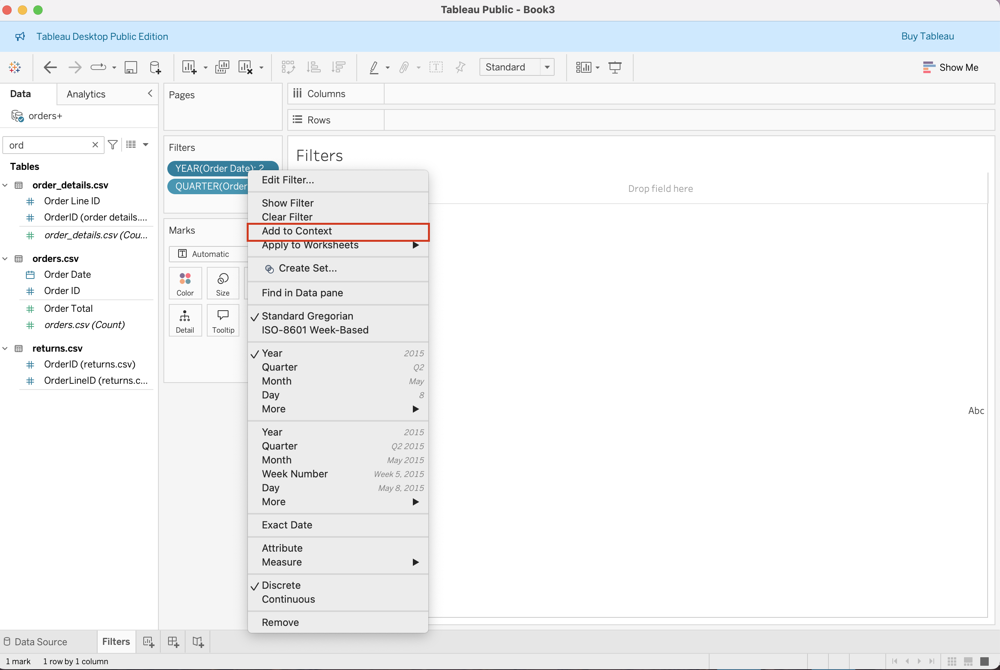
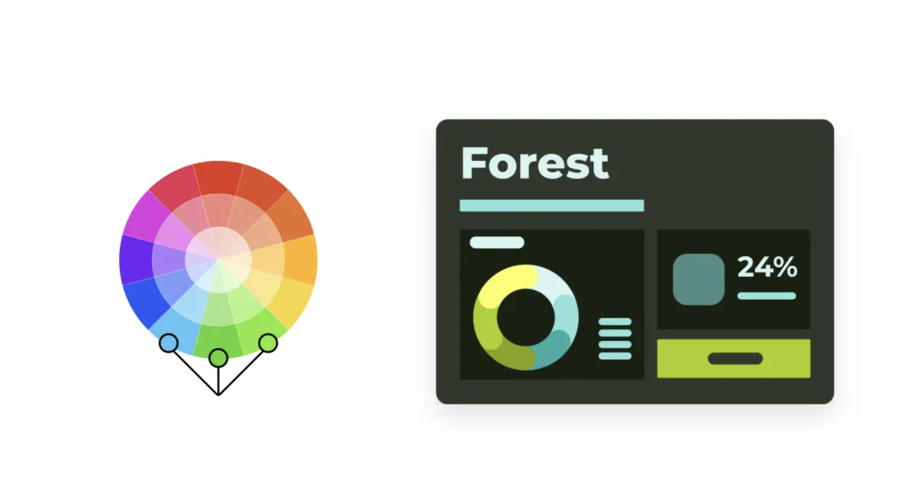

Primary Colors
Primary colors are the building blocks of all other colors. They cannot be created by mixing other colors.
The primary colors are typically red, blue, and yellow.
Tableau Products - Tableau Server: On-premise platform that enables organizations to share dashboards privately - Tableau Cloud: Cloud-based platform for sharing and managing dashboards without needing any server infrastructure - Tableau Public: Free, cloud-based platform that enables Tableau enthusiasts to publish their dashboards - Tableau Next: Automated insight generation and trend detection - Tableau Desktop: Tool for creating visualizations and publishing them on Tableau Cloud, Tableau Server or Tableau Public - Tableau Prep: Data preparation tool
Tableau File Types - Workbooks (.twb) - Bookmarks (.tbm) - Packaged Workbooks (.twbx) - Extract (.hyper) - Data Source (.tds) - Packaged Data Source (.tdsx)
Tableau Desktop Public Edition enables making visualizations and managing dashboards - Online - Offline
Dataset Name: airbnb.xlsx

NameSUM(Number of Reviews)Note: Dimensions with a data type of String or Boolean can’t be continuous. Dates are the most common continuous dimension.
You can convert measures from discrete to continuous or from continuous to discrete. Click the field and choose Discrete or Continuous.
 |
 |
|---|---|
| Continuous | Discrete |
Main sections: - A: Data Pane – contains all fields (dimensions, measures, parameters) - B: Shelves – control how fields appear in your view - C: Marks Card – controls visual elements (color, size, shape, label) - D: Filters Shelf – limits data shown in the view - E: Dashboard Pane – combines multiple sheets into one display - F: Toolbar & Buttons – quick access to tools (undo, redo, sort, etc.)

 |
 |
 |
 |
|---|---|---|---|
| Bar Chart | Line Chart | Pie Chart | Scatter Plot |
 |
 |
 |
 |
|---|---|---|---|
| Filters | Groups | Sets | Sorting |

| Feature / Method | UNION | JOIN | RELATIONSHIP | BLEND |
|---|---|---|---|---|
| Layer | Physical Layer | Physical Layer | Logical Layer | Visualization Level |
| Multiple Data Sources | ❌ | ❌ | ❌ | ✅ |
| Merge Tables | ✅ | ✅ | ❌ | ❌ |
| Flexibility | Static | Static | Flexible | Very Flexible (Page by Page) |
| Join Types | n/a | Inner, Left, Right, Full | All | Left |
 |
 |
 |
|---|---|---|
| Relationship | Join | Union |
 |
 |
 |
|---|---|---|
| Relationship | Join | Blend |
Note: In joins, the same row can be duplicated multiple times; the SUM of [Order Total] may be inflated.
When Tableau applies filters, it follows this logical order:
Year = 2023 so Tableau only loads 2023 records.[Region] = "West" as a data source filter to limit analysis to western U.S. orders.
[Year] = 2023 as a context filter, then filter [Quarter].|  |  |
|---|---|
| Year | Quarter |
[Region] = "West".[Customer name]OrderTotal, Quantity, Unite Price or Discount.[Unite Price] >= 100 to analyze only high-value purchases.
[OrderDate] → Relative Date → Last 1 Quarter.
[CustomerName] → Filter → Top → “By field” → Count(Order_ID) → Top 10.
Quarter([OrderDate]) → Show Filter → choose “Dropdown” or “Single Value List.”
Calculated fields allow you to create new data fields in Tableau using formulas.
They are useful for comparisons, ratios, flags, or categorization.
There are two main types of calculated fields in Tableau.
SUM, AVG, MIN, MAX must be applied.In the field of visual storytelling, Edward R. Tufte holds a highly valued and foundational role.
His work bridges data, design, and narrative, showing how information can be communicated not just clearly — but beautifully.
Tufte’s philosophy inspires designers, analysts, and artists to transform raw data into meaningful visual stories that both inform and move audiences.
Edward R. Tufte is an American statistician, artist, and Yale professor, often referred to as the father of data visualization.
He teaches that visual storytelling should combine truth, clarity, and design integrity — allowing the story within data to emerge naturally.
“Above all else, show the data.”
Tufte’s principles are not about decoration but purposeful simplicity — every mark, color, or shape should tell part of the story.

What it shows:
Charles Joseph Minard’s famous visualization tells the tragic story of Napoleon’s march to Moscow
Why it matters:
Storytelling takeaway:
A single visual can tell a complete story — if every element is meaningful.

What is chartjunk?
Unnecessary decorative elements (3D bars, shadows, clip art, heavy borders) that distract from meaning.
Why it matters in storytelling:
Visual noise hides the message. Simplicity reveals it.
Guideline:
Every pixel, line, and color must serve the story, not style.

What it means:
Every stroke on a chart should represent data, not decoration.
The data-ink ratio measures how efficiently a visualization uses visual space to convey information.
Storytelling principle:
When visuals are simplified, the message becomes more powerful.
Practical rules:

What they are:
A set of small, consistent visuals that share the same scale and layout.
They let the viewer compare patterns easily and see how a story changes over time or category.
(Source: Wikipedia)
Why it matters:
Storytelling takeaway:
Use repetition and consistency to guide the audience through multiple connected stories.

Core idea:
A visual should never distort the truth.
If a graph exaggerates or minimizes a change, it tells a false story.
To apply:
Storytelling takeaway:
Integrity builds credibility — the story must be as honest as the data itself.

How color behaves in relation to other colors and shapes is a complex area of color theory.
Our eyes and brain adjust for these differences automatically.
Color perception can be deceptive and is influenced not just by an object’s physical properties but by a variety of other factors, including the light, audience, and surroundings in which a color is viewed
The color wheel serves as a valuable tool for organizing and understanding the relationships between colors. It helps to make effective, harmonious color choices and to create captivating visual compositions.
At its core, the color wheel provides fundamental information about:

Make color palletes based on Adobe Color Wheel.
Primary colors are the building blocks of all other colors. They cannot be created by mixing other colors.
The primary colors are typically red, blue, and yellow.
Secondary colors are created by mixing two primary colors together.
The secondary colors are:
Tertiary colors are formed by mixing a primary color with a neighboring secondary color.
Examples include yellow-orange, blue-green, and red-purple.
Tertiary colors provide more variety and subtlety in color palettes.
The color wheel provides a visual guide to how colors relate to one another. Understanding these relationships helps create balanced and visually appealing dashboards. Depending on the goal — contrast or harmony — choosing the right scheme can enhance both clarity and emotional impact.




Effective dashboards combine color harmony, functionality, readability, consistency, and accessibility to create visuals that are both beautiful and meaningful.
These principles guide how to select, organize, and apply colors to make dashboards clear, engaging, and easy to interpret.
Choose colors that work well together to create a balanced and cohesive design.
Harmonious palettes enhance the overall visual appeal and make the dashboard feel unified.
Use color to improve usability and highlight important data.
Colors should establish hierarchy, guide attention, and provide visual feedback.
Each color must be distinct to help users quickly interpret the information.
Colors should enhance comprehension and direct focus without overwhelming users.
They can create visual cues and emphasize trends or key metrics.
Example:
These are known as semantic colors, helping users instantly grasp meaning.
Maintain a limited and consistent color palette.
Too many colors create confusion — fewer colors create clarity, unity, and focus.
A simple scheme ensures the dashboard is visually clean and user-friendly.
Design for everyone, including users with color vision deficiencies.
Ensure:
Accessible design makes dashboards inclusive and effective for all viewers.